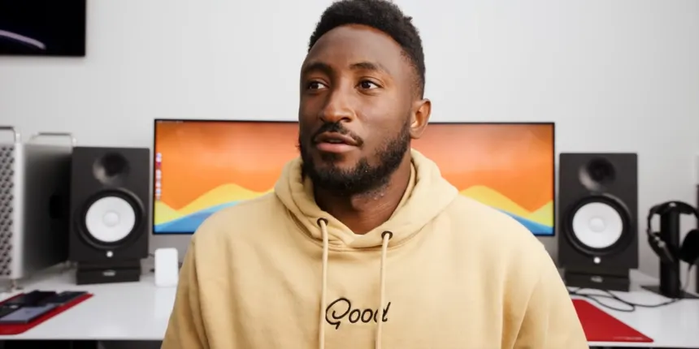

Tech Heroes
Marques Brownlee
Marques Brownlee (MKBHD) has become a symbol of independent authority in a field often critiqued for its lack of diverse leadership. By maintaining full creative control over his content, he avoids the corporate "gatekeeping" that can silence critical discussions about technology's impact on our society.
Waveform: The MKBHD Podcast
Beyond his YouTube reviews, Marques hosts the Waveform Podcast (WVFRM). This platform allows for insightful conversations about the ethics of technology.
Resources & Links
Ruha Benjamin
Ruha Benjamin is the Alexander Stewart 1886 Professor of African American Studies at Princeton University and the founder of the Ida B. Wells Just Data Lab. Her research explores the relationship between innovation, equity, and justice, examining how technology can both reinforce and challenge racial hierarchies. She is the author of acclaimed books including Race After Technology, Viral Justice, and Imagination: A Manifesto, and was named a 2024 MacArthur Fellow.
Featured Videos
Resources & Links
Deborah Barnwell

Deborah Barnwell focuses on fostering inclision as the inclusion and opportunity partner for Barclays. This is a very important role as her beliefs are rooted in driving systemic change, empowering and valuing those of all backgrounds.